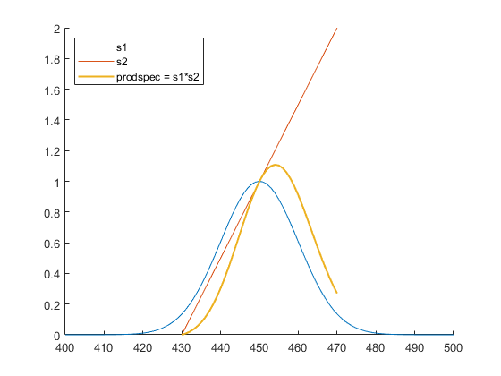

MultiplySpectra
Navigate to: Home | Alphabetic list | Grouped list | Source code: MultiplySpectra.m
Multiply two spectra
Contents
Syntax
rv = MultiplySpectra(lhs, rhs)
Input Arguments
- lhs: A valid spectrum, i.e. a struct with two array fields, lam and val (see SpectrumSanityCheck for detailed requirements)
- rhs: Likewise
Output Arguments
- rv: A spectrum modeling the product.
Algorithm
A spectrum in this library models a continuous, piecewise linear function of wavelength. For a given array of wavelenghts, the modeled spectrum is linear between wavelength points, and zero outside the wavelength domain. At the ends of the wavelength domain the modeled spectrum may drop discontinously to zero. (If you don't like these discontinuities at the domain boundary, add end points with zero values.). The product spectrum's wavelength points consist of the "interweaved" wavelength arrays of lhs and|rhs|, where they overlap. If they don't overlap at all, a spectrum is returned with two wavelength points and both values zero.
At each wavelength point, one value is taken from the corresponding point of one spectrum and the linearly interpolated point of the other spectrum, then these two are multiplied. Strictly speaking, the product spectrum would not be piecewise linear, it would be piecewise quadratic. However, this is neglected here. If a better approximation to the quadratic product spectrum is desired, you may resample lhs and/or rhs on a finer wavelength array using ResampleSpectrum.
See also
AddSpectra, AddWeightedSpectra, IntegrateSpectrum, ResampleSpectrum, ScaleSpectrum
Usage Example
function ExampleMultiplySpectra() s1 = GaussSpectrum(400:500, 450,10); s2 = MakeSpectrum([430 470],[0 2]); prodspec = MultiplySpectra(s1, s2); figure(); clf; hold on; plot(s1.lam, s1.val); plot(s2.lam, s2.val); plot(prodspec.lam, prodspec.val); legend({'s1','s2','prodspec = s1*s2'},'Location','northwest'); end